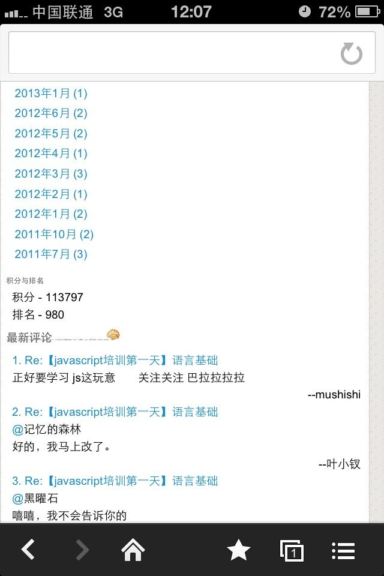

【写漂亮的博客】让我们的博客更加漂亮，让我们的博客支持响应式布局！
前言
很多朋友问我的博客是什么软件写的，嘻嘻，其潜台词是我的博客页面还挺好看的呢！！！心里美滋滋的，这里就把方法共享出来吧
定制样式而已
我的博客主要是对H1的样式做了一点改变，给H1加上了背景色，并且对其文字做了一点改变，我们来看看我的博客的页面；
其中的centercontent就是博客的主体，我们博客园其实是设置了地方可以定制样式的：

在这个地方设置就可以了，我这里是这样写的：
<style type="text/css"> #cnblogs_post_body { color: black; font: 0.875em/1.5em "微软雅黑" , "PTSans" , "Arial" ,sans-serif; font-size: 16px; } #cnblogs_post_body h1 { background: #2B6695; border-radius: 6px 6px 6px 6px; box-shadow: 0 0 0 1px #5F5A4B, 1px 1px 6px 1px rgba(10, 10, 0, 0.5); color: #FFFFFF; font-family: "微软雅黑" , "宋体" , "黑体" ,Arial; font-size: 17px; font-weight: bold; height: 25px; line-height: 25px; margin: 15px 0 !important; padding: 5px 0 5px 20px; text-shadow: 2px 2px 3px #222222; }
</style>
这个样子，我们的博客便会比较有层次感了。但是若是这样就结束了，我就弱爆了！
让我们的博客页支持响应式布局！
在以上的CSS中我们若是加上以下CSS代码：
@media screen and (min-width: 1px) and (max-width: 800px) { #mytopmenu { margin-left: 0; margin-right: 0; width: 100%; } #centercontent { padding-left: 0; padding-right: 0; width: 100%; } #leftcontent { width: 100%; position: static; width: 100%; } #footer { margin: 0; width: 100%; } #comment_form { display: none; } #header { display: none; } #green_channel { display: none; } #centercontent img { width: 98% !important; }
}
然后在这里加上以下代码：
<script type="text/javascript"> var meta = document.createElement('meta'); meta.setAttribute('name', 'viewport'); meta.setAttribute('content', 'initialwidth=device-width,initial-scale=1'); document.getElementsByTagName('head')[0].appendChild(meta); </script>
于是，在手机上在网页上，我们的博客就简单的响应式布局啦！！！
PS：这里应该对图片宽度有所限制才行！

结语
来吧，让我们一起来打造我们美丽的博客吧！